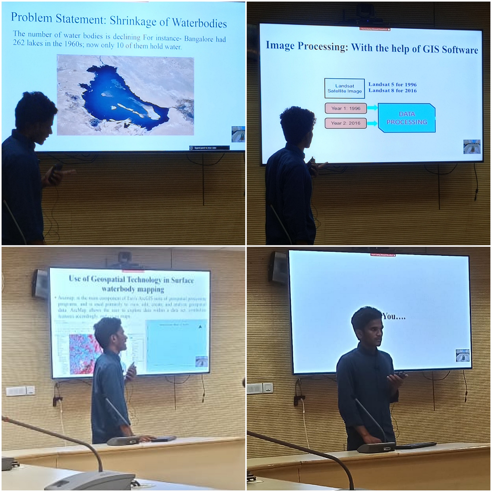

Manjar Alam
Young Professional-II (Remote Sensing & GIS) | ICAR–IASRI, New Delhi
• Remote Sensing • GIS • Geospatial AI • Agricultural Applications • Drone Mapping • Machine Learning • WebGIS
About Me
I am a Remote Sensing and GIS professional with experience in geospatial analysis, agricultural remote sensing, drone image processing, machine learning, and WebGIS development. Currently, I work as a Young Professional-II (Remote Sensing & GIS) at ICAR–Indian Agricultural Statistics Research Institute (ICAR-IASRI), New Delhi, where I contribute to national research projects involving agricultural monitoring, geospatial analytics, and spatial data management.
My expertise includes GIS analysis, satellite image processing, drone data processing, spatial modelling, climate data analysis, Google Earth Engine, Python automation, and machine learning for geospatial applications. I enjoy transforming complex spatial datasets into meaningful insights that support decision-making in agriculture, water resources, and environmental management.
My research interests include precision agriculture, groundwater recharge mapping, climate change, crop monitoring, environmental modelling, and GeoAI. I am passionate about building innovative geospatial solutions that bridge research with real-world applications.

Explore My Projects Explore My Publications Download CV
Technical Skills
-
Remote Sensing & GIS
- ArcGIS Pro, ArcMap, QGIS
- ERDAS Imagine, ENVI, SNAP, Pix4Dmapper
- Image Interpretation & Photogrammetry
- Cartography, Georeferencing, Geocoding & Digitization
- Spatial Analysis & Terrain Analysis
- LULC Classification & Change Detection
- Groundwater & Watershed Analysis
-
Satellite & Drone Data
- Sentinel-1 (SAR), Sentinel-2, Landsat 5/7/8/9
- MODIS, NISAR
- UAV/Drone Data Processing
- Orthomosaic, DSM & DTM Generation
- Vegetation Indices (NDVI, SAVI, EVI, NDWI)
- Time-Series Remote Sensing
- Crop Health Monitoring
-
Machine Learning & GeoAI
- Random Forest, XGBoost, SVM, Multiple Linear Regression
- Scikit-learn, OBIA
- Model Validation & Hyperparameter Tuning
- Accuracy Assessment & ROC-AUC
- Spatial Machine Learning
-
Programming & Automation
- Python (NumPy, Pandas, GeoPandas, GDAL, Rasterio, Xarray, RichDEM)
- R Programming
- Google Earth Engine (JavaScript & Python API)
- ArcPy & ModelBuilder
- ETL & Data Processing
- QA/QC Automation
- Jupyter Notebook
-
Databases & WebGIS
- PostgreSQL/PostGIS
- GeoServer, OpenLayers & Leaflet
- ArcGIS Online (Experience Builder, Instant Apps, Dashboard)
- HTML, CSS & JavaScript
- WMS, WFS & REST Services
-
Climate, Agriculture & Research
- Climate Data Analysis (NetCDF, ERA5, SPI, SPEI)
- Agricultural & Crop Modelling (InfoCrop, DSSAT, APSIM)
- Spatial Statistics & Time-Series Analysis
- Scientific Writing
- OriginPro, LaTeX, Zotero & Mendeley
- Power BI & Microsoft Excel